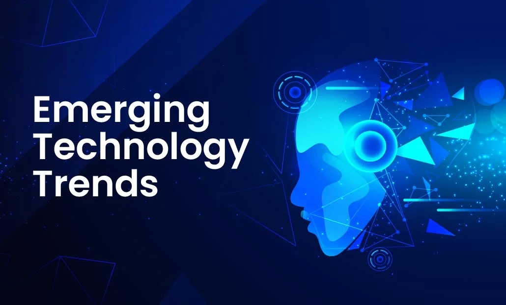

Top 3 Emerging Technologies in the Digital World
Published on: October 25, 2024

Discussing emerging technologies is an exciting way to highlight trends shaping the future. You might want to cover the following:
- Artificial Intelligence and Machine Learning: AI and ML are advancing fields reshaping many industries. Explain how AI is improving automation, decision-making, and personalization. From natural language processing in chatbots to AI in healthcare, these technologies are expanding possibilities and efficiency.
- Quantum Computing: Although still in early stages, quantum computing promises to solve problems beyond the reach of classical computers. Highlight applications like drug discovery, encryption, and solving complex algorithms faster than ever before.
- Extended Reality (XR): XR combines Virtual Reality (VR), Augmented Reality (AR), and Mixed Reality (MR) to provide immersive experiences. These technologies are reshaping areas like gaming, education, and training by blending physical and digital worlds, offering exciting ways to interact and learn.
Comments
The Future of Artificial Intelligence in Everyday Life
Published on: October 26, 2024

AI is rapidly integrating into our daily routines, and here are a few areas where it’s having a major impact:
- Smart Homes and Personal Assistants: Voice-activated assistants like Alexa or Google Home illustrate how AI is making home management and daily tasks easier and more efficient, adapting to user preferences over time.
- Healthcare Innovations: AI is revolutionizing healthcare through tools that assist in diagnostics, predictive analysis for disease prevention, and personalized treatment plans. Algorithms are now helping doctors make faster, more accurate decisions, improving patient outcomes.
- Transportation and Smart Cities: Self-driving vehicles and AI-managed traffic systems are making cities safer and more efficient. With smart city infrastructure, AI can optimize energy usage, waste management, and safety, making urban life more sustainable and streamlined.
Comments
Data Privacy and Cybersecurity Trends in 2024
Published on: October 27, 2024
As data privacy concerns grow, cybersecurity is becoming essential for organizations and individuals alike. Here are some trends to discuss:
- Increased Use of Encryption and Zero-Trust Models: Companies are adopting zero-trust models, which require strict identity verification at every access point, minimizing the risk of unauthorized access. Encryption techniques are also evolving to protect sensitive information from interception.
- Rise of AI in Cybersecurity: Just as AI is transforming industries, it’s also boosting cybersecurity. AI can detect threats in real-time, flagging anomalies and strengthening defenses against increasingly sophisticated cyber-attacks.
- User Education and Awareness: Cybersecurity isn’t just about technology—it’s about people. Many organizations are now prioritizing user training on secure online practices, recognizing that educated users are often the first line of defense against cyber threats.
Comments